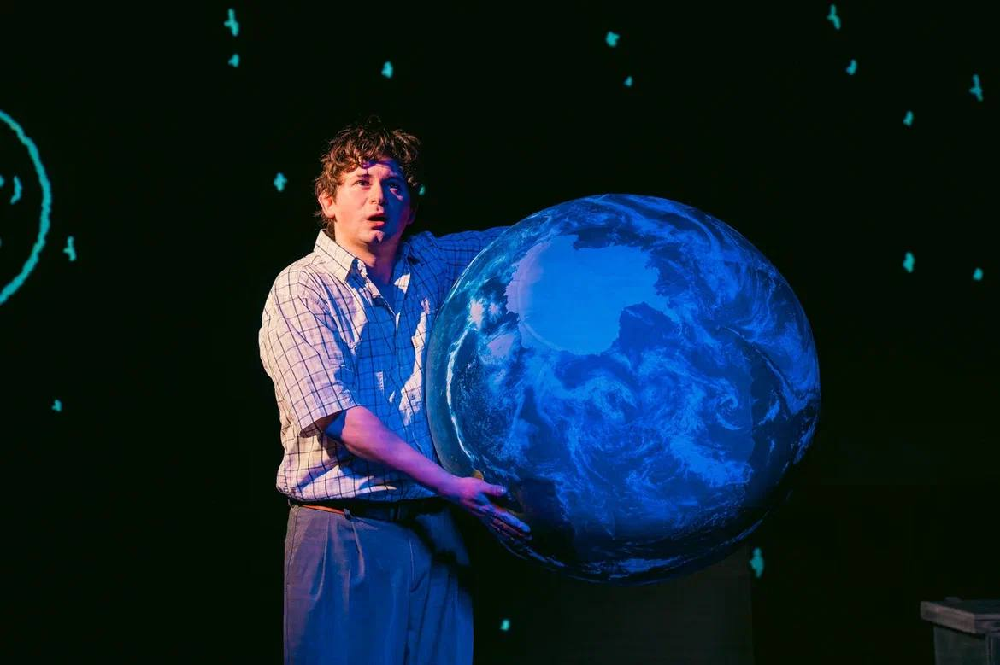
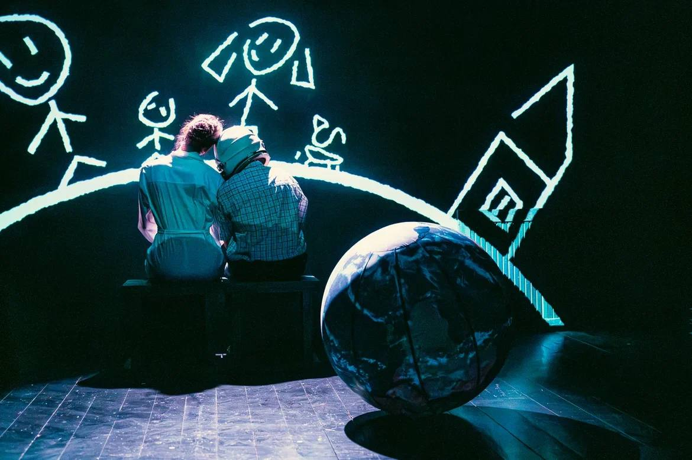

Федя Булкин
Театр Практика · Основная сцена
14 января 2026
Режиссёр — Юрий Печенежский
Художник-постановщик — Леша Лобанов
Видеохудожник
14 января 2026
Режиссёр — Юрий Печенежский
Художник-постановщик — Леша Лобанов
Видеохудожник

О проекте
Видеоконтент становится частью сценического мира — от рисованной графики до масштабной проекции, меняющей пространство сцены.
Страница проекта ↗
Федя Булкин
Все проекты →